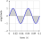
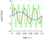
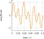

A sound is a vibration that propagates through the air and can be understood by ears. MP3 players or computers use headphones or built-in speakers to produce vibrations and make "sounds". Music is just a kind of signal which can be reproduced using various sinusoidal waveforms and like that must be treated.
1.1. Signal scrambling via sines sums
A sine wave is characterized by two parameters:
Frequency \(\Longrightarrow\) the number of cycles per unit of time, measured in Hertz
Amplitude \(\Longrightarrow\) the height of the cycle
A generic sine wave is described by the function:
\[y(t) = A \cdot \sin(2\pi f t + \varphi)\]
where:
\(A\) is the amplitude
\(f\) is the frequency
\(t\) is the time
\(\varphi\) is the phase

Figure 1.1: A 20Hz sine wave
In the figure 1.1 the sine wave is described by the function:
\[y(t)=1\cdot\sin(2\pi 20 t + 0)=\sin(40\pi t)\]
But, in the real world, almost any signal is a weighted sum of sines. For example, take three different sine waves, as follows:
Frequency 10Hz and amplitude 1 \(\Longrightarrow a(t) = \sin(20\pi t)\)
Frequency 30Hz and amplitude 2 \(\Longrightarrow b(t) = 2\cdot\sin(60\pi t)\)
Frequency 60Hz and amplitude 3 \(\Longrightarrow c(t) = 3\cdot\sin(120\pi t)\)

Figure 1.2: Three different sine waves

Figure 1.3: Sum of the three sine waves
These three functions can be plotted separately as shown in the figure 1.2, or they can be summed up in just a single function to represent a more realistic sound (figure 1.3).